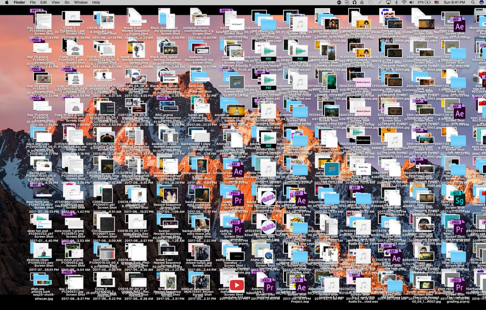

Project and data management
Reading
Some data management disasters
- The Economist (2011), “Video: Keith Baggerly, "When Is Reproducibility an Ethical Issue? Genomics, Personalized Medicine, and Human Error"†(n.d.)
- Herndon, Ash, and Pollin (2014), but you can just read Bailey and Borwein (Jon) (n.d.), Cassidy (n.d.), and/or watch Reinhart & Rogoff - Growth in a Time of Debt - EXERCISE! (2019)
- Laskowski (n.d.), Viglione (2020), Pennisi (2020)
- “How Excel May Have Caused Loss of 16,000 Covid Tests in England†(2020)
Dumpster organization
😱 Source: https://pbs.twimg.com/media/DFca5SRXsAAx1NA
- Dump all of your files into one place
- Use search tools to find what you want
- Just assume that things aren’t getting corrupted
- The way many Gen Z students think about their files? (Chin 2021)
The first rule of data management
Do not edit your data
Project organization

Noble’s (2009) sample folder structure is designed for experimental biologists
- Keep your project self-contained
- Locate files quickly
- Play nicely with version control
- Self-document key relationships between project files
- Work with your data without editing it
A model for computational social science projects
.
├── R
├── data
├── paper
│ ├── _quarto.yml
│ ├── paper.qmd
├── plots
├── readme.md
├── scripts
└── talkConfigured as a GitHub “template,†making it easy to create new repositories for new projects
Designated folders for data, plots/outputs, and utility functions
File naming convention
Files in scripts, data, and plots should generally use a sequential naming convention:
- Scripts in
scriptsshould have filenames starting with01_:01_scrape.R02_parse.R03_eda.R, and so on
- Data and plot files (
dataandplots) should use a parallel naming convention:00_indicates raw data (produced or gathered outside of the pipeline inscripts)01_indicates plots and intermediate data files produced by script number01, and so on
The model in action: A mid-sized text-mining project
Published paper: https://doi.org/10.1162/qss_a_00150
GitHub repo: https://github.com/dhicks/orus
23 directories, 274 files (plus 160k data files)
.
├── ORU\ faculty
│ └── ORU\ Publications.fld
├── QSS\ forms
├── R
├── data
│ ├── author_histories
│ ├── authors_meta
│ ├── docs
│ ├── ldatuning_results
│ ├── parsed_blocks
│ ├── pubs
│ └── temp
├── paper
│ ├── img
│ └── scraps
├── plots
├── presentations
└── scripts
├── 12_analysis_cache
│ └── html
├── 12_analysis_files
│ └── figure-html
└── scrapsThe analysis pipeline
├── scripts
│ ├── 01_parse_faculty_list.R
│ ├── 02_Scopus_search_results.R
│ ├── 03_match.R
│ ├── 03_matched.csv
│ ├── 04_author_meta.R
│ ├── 05_filtering.R
│ ├── 06_author_histories.R
│ ├── 07_complete_histories.R
│ ├── 08_text_annotation.R
│ ├── 09_build_vocab.R
│ ├── 10_topic_modeling.R
│ ├── 11_depts.R
│ ├── 11_depts.html
│ ├── 12_analysis\ copy.html
│ ├── 12_analysis-matched.html
│ ├── 12_analysis.R
│ ├── 12_analysis.html
│ ├── 12_analysis_cache
│ │ └── html
│ │ ├── __packages
│ │ ...
│ │ └── topic_viz_41d0cb157a88d4ec41810a16e769f5d5.rdx
│ ├── 12_analysis_files
│ │ └── figure-html
│ │ ├── author-dept\ distance-1.png
│ │ ...
│ │ └── topic_viz-2.png
│ ├── api_key.R
│ └── scraps
│ ├── 02_parse_pubs_list.R
│ ├── 03_coe_pubs.R
│ ├── 03_match_auids.R
│ ├── 07.R
│ ├── 12_regressions.R
│ ├── BML-CMSI\ deep\ dive.R
│ ├── Hellinger_low_memory.R
│ ├── dept_hell_net.R
│ ├── divergence\ against\ lagged\ distributions.R
│ ├── exploring\ topics.R
│ ├── fractional_authorship.R
│ ├── hellinger.R
│ ├── model_scratch.R
│ ├── multicore.R
│ ├── net_viz.R
│ ├── prcomp.R
│ ├── propensity.R
│ ├── rs_diversity.R
│ ├── spacyr.R
│ ├── topic\ counts\ rather\ than\ entropies.R
│ ├── topic_cosine_sim.R
│ ├── unit-level.R
│ ├── weighted\ regression.R
│ ├── word-topic_distance.R
│ ├── xx_construct_samples.R
│ └── xx_oru_complete_histories.RIntermediate data files
data
├── *ORUs\ -\ DSL\ -\ Google\ Drive.webloc
├── 00_UCD_2016.csv
├── 00_UCD_2017.csv
├── 00_UCD_2018.csv
├── 00_faculty_list.html
├── 00_manual_matches.csv
├── 00_publications_list.html
├── 01_departments.csv
├── 01_departments_canonical.csv
├── 01_faculty.Rds
├── 02_pubs.Rds
├── 03_codepartmentals.Rds
├── 03_dropout.Rds
├── 03_matched.Rds
├── 03_unmatched.Rds
├── 04_author_meta.Rds
├── 04_dropouts.Rds
├── 04_genderize
├── 04_namsor.Rds
├── 05_author_meta.Rds
├── 05_dept_dummies.Rds
├── 05_dropouts.Rds
├── 05_layout.Rds
├── 05_matched.Rds
├── 06_author_histories.Rds
├── 07_coauth_count.Rds
├── 07_parsed_histories.Rds
├── 08_phrases.Rds
├── 09_H.Rds
├── 09_atm.csv
├── 09_vocab.tex
├── 10_atm.csv
├── 10_atm_pc.Rds
├── 10_aytm.csv
├── 10_aytm_comp.csv
├── 10_aytm_did.csv
├── 10_model_stats.Rds
├── 10_models.Rds
├── 11_au_dept_xwalk.Rds
├── 11_departments.csv
├── 11_departments_canonical.csv
├── 11_dept_dummies.Rds
├── 11_dept_gamma.Rds
├── 11_dept_term_matrix.Rds
├── 11_oru_gamma.Rds
├── 11_oru_term_matrix.Rds
├── 11_test_train.Rds
├── 12_layout.Rds
├── author_histories [7665 entries exceeds filelimit, not opening dir]
├── authors_meta [6020 entries exceeds filelimit, not opening dir]
├── docs [145144 entries exceeds filelimit, not opening dir]
├── ldatuning_results
│ ├── tuningResult_comp.Rds
│ ├── tuningResult_comp.docx
│ ├── tuningResult_comp.pdf
│ ├── tuningResult_did.Rds
│ └── tuningResult_did.pdf
├── ldatuning_results-20190415T164055Z-001.zip
├── parsed_blocks [430 entries exceeds filelimit, not opening dir]
├── pubs [282 entries exceeds filelimit, not opening dir]
└── tempA reminder on paths
- Windows and Unix-based systems write paths differently
- Use
file.path()or (even better) theherepackage to construct paths
Exercise: Organize your EDA
.
├── R
├── data
├── paper
├── plots
├── readme.md
├── scripts
└── talkData management plans
- Much like a research plan, data management plans provide an overview of the steps you’ll take to gather, publish, and maintain your data
- Since 2011, NSF has required a 2-page data management plan for most types of proposals
Common elements
- Who is responsible for data management
- Who else will have access to which data
- How data will be collected
- Data formatting standards
- Whether and how data will be archived and made available for reuse
Data management plan examples and resources
FAIR principles for published data
- Findable
- F1. (meta)data are assigned a globally unique and persistent identifier
- F2. data are described with rich metadata (defined by R1 below)
- F3. metadata clearly and explicitly include the identifier of the data it describes
- F4. (meta)data are registered or indexed in a searchable resource
- Accessible
- A1. (meta)data are retrievable by their identifier using a standardized communications protocol
- A1.1 the protocol is open, free, and universally implementable
- A1.2 the protocol allows for an authentication and authorization procedure, where necessary
- A2. metadata are accessible, even when the data are no longer available
- A1. (meta)data are retrievable by their identifier using a standardized communications protocol
- Interoperable
- I1. (meta)data use a formal, accessible, shared, and broadly applicable language for knowledge representation.
- I2. (meta)data use vocabularies that follow FAIR principles
- I3. (meta)data include qualified references to other (meta)data
- Reusable
- R1. meta(data) are richly described with a plurality of accurate and relevant attributes
- R1.1. (meta)data are released with a clear and accessible data usage license
- R1.2. (meta)data are associated with detailed provenance
- R1.3. (meta)data meet domain-relevant community standards
- R1. meta(data) are richly described with a plurality of accurate and relevant attributes
CARE principles
Applications of FAIR Principles have the potential to neglect the rights of Indigenous Peoples and their protocols for cultural, spiritual and ecological information. (Jennings et al. 2023)
- Collective benefit
- C1. For inclusive development and innovation
- C2. For improved governance and citizen engagement
- C3. For equitable outcomes
- Authority to control
- A1. Recognizing rights and interests
- A2. Data for governance [self-governance and self-determination]
- A3. Governance of data
- Responsibility
- R1. For positive relationships
- R2. For expanding capability and capacity
- R3. For Indigenous languages and worldviews
- Ethics
- E1. For minimizing harm and maximizing benefit
- E2. For justice
- E3. For future use
References
Bailey, David H., and Jonathan Borwein (Jon). n.d. “The Reinhart-Rogoff Error – or How Not to Excel at Economics.†The Conversation. Accessed May 16, 2020. http://theconversation.com/the-reinhart-rogoff-error-or-how-not-to-excel-at-economics-13646.
Cassidy, John. n.d. “The Reinhart and Rogoff Controversy: A Summing Up.†The New Yorker. Accessed September 27, 2020. https://www.newyorker.com/news/john-cassidy/the-reinhart-and-rogoff-controversy-a-summing-up.
Chin, Monica. 2021. “Students Who Grew up with Search Engines Might Change STEM Education Forever.†The Verge. September 22, 2021. https://www.theverge.com/22684730/students-file-folder-directory-structure-education-gen-z.
Herndon, Thomas, Michael Ash, and Robert Pollin. 2014. “Does High Public Debt Consistently Stifle Economic Growth? A Critique of Reinhart and Rogoff.†Cambridge Journal of Economics 38 (2): 257–79. https://doi.org/10.1093/cje/bet075.
“How Excel May Have Caused Loss of 16,000 Covid Tests in England.†2020. The Guardian. October 5, 2020. http://www.theguardian.com/politics/2020/oct/05/how-excel-may-have-caused-loss-of-16000-covid-tests-in-england.
Jennings, Lydia, Talia Anderson, Andrew Martinez, Rogena Sterling, Dominique David Chavez, Ibrahim Garba, Maui Hudson, Nanibaa’ A. Garrison, and Stephanie Russo Carroll. 2023. “Applying the ‘CARE Principles for Indigenous Data Governance’ to Ecology and Biodiversity Research.†Nature Ecology & Evolution, August, 1–5. https://doi.org/10.1038/s41559-023-02161-2.
Laskowski, Kate. n.d. “What to Do When You Don’t Trust Your Data Anymore – Laskowski Lab at UC Davis.†Accessed January 29, 2020. https://laskowskilab.faculty.ucdavis.edu/2020/01/29/retractions/.
Noble, William Stafford. 2009. “A Quick Guide to Organizing Computational Biology Projects.†PLOS Computational Biology 5 (7): e1000424. https://doi.org/10.1371/journal.pcbi.1000424.
Pennisi, Elizabeth. 2020. “Prominent Spider Biologist Spun a Web of Questionable Data.†Science 367 (6478): 613–14. https://doi.org/10.1126/science.367.6478.613.
Reinhart & Rogoff - Growth in a Time of Debt - EXERCISE! 2019. https://www.youtube.com/watch?v=ItGMz0ERvcw.
The Economist. 2011. “An Array of Errors,†September 10, 2011. https://www.economist.com/science-and-technology/2011/09/10/an-array-of-errors.
“Video: Keith Baggerly, "When Is Reproducibility an Ethical Issue? Genomics, Personalized Medicine, and Human Error".†n.d. Accessed September 23, 2020. http://www.birs.ca/events/2013/5-day-workshops/13w5083/videos/watch/201308141121-Baggerly.html.
Viglione, Giuliana. 2020. “‘Avalanche’ of Spider-Paper Retractions Shakes Behavioural-Ecology Community.†Nature, February. https://doi.org/10.1038/d41586-020-00287-y.
Wilkinson, Mark D., Michel Dumontier, IJsbrand Jan Aalbersberg, Gabrielle Appleton, Myles Axton, Arie Baak, Niklas Blomberg, et al. 2016. “The FAIR Guiding Principles for Scientific Data Management and Stewardship.†Scientific Data 3 (1, 1): 1–9. https://doi.org/10.1038/sdata.2016.18.